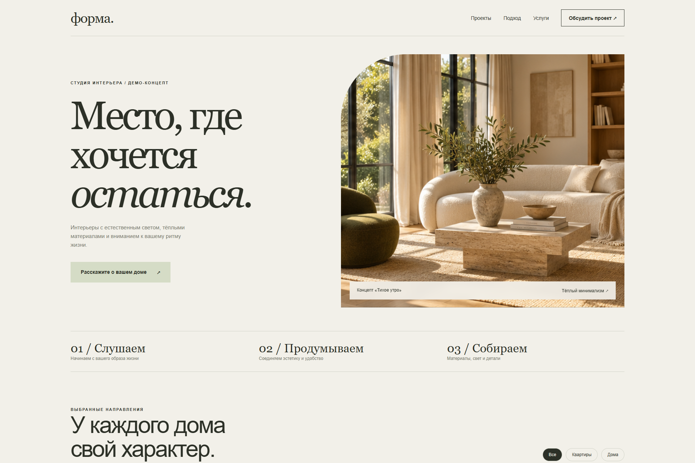
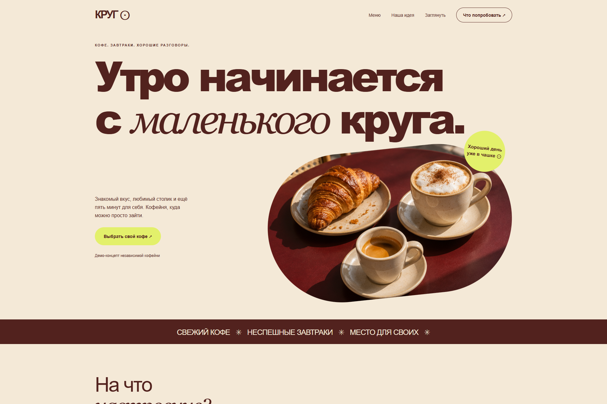
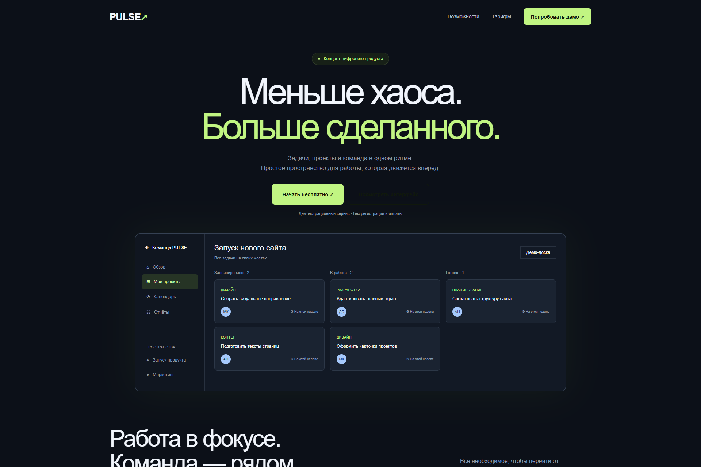
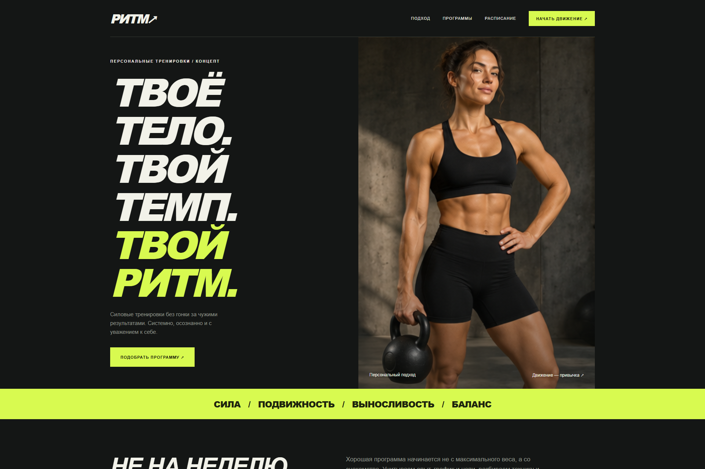
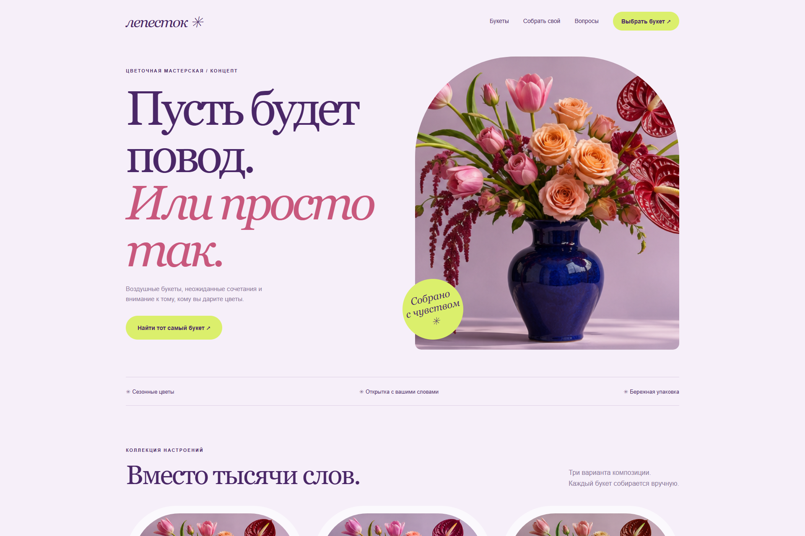

Форма — Интерьерная студия ↗
Тёплый минимализм · редакционная композиция
Учебные концепты для вымышленных проектов. Адаптивные страницы на HTML, CSS и JavaScript: навигация, фильтры, калькуляторы и демонстрационные формы.




